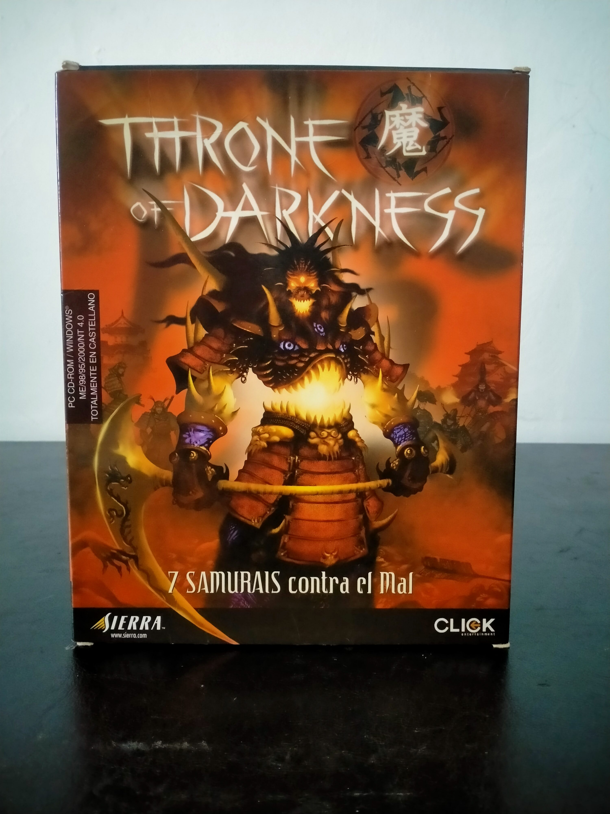

Ficha #000027
Throne of Darkness
Throne of Darkness es un action RPG ambientado en un Japón feudal fantástico inspirado en mitología y folclore oriental. Desarrollado por Click Entertainment y publicado por Sierra en 2001, el juego combinaba mecánicas heredadas de Diablo con un sistema de control de grupo basado en siete samuráis jugables, cada uno con habilidades, estadísticas y estilos de combate diferenciados. Destacó por su ambientación nipona poco habitual dentro del género hack and slash occidental de principios de los 2000, así como por su sistema de saqueo, progresión de personajes y juego cooperativo online. Esta edición española en formato Big Box incluye textos y contenidos localizados al castellano y representa una de las distribuciones físicas europeas más reconocibles del título.
- Formato
- Big Box
- Plataforma
- Win95 Win98 Win2000 WinMe
- Género
- Action RPG Hack and slash Rol de acción Fantasia oscura
- Serie
- Todos Big Box
- Desarrollador
- Click Entertainment
- Distribuidor
- Sierra, Sierra Interactive España
- EAN
- —
Contenido de la edición
- CD-ROM
- Manual
- Caja Big Box
- Tarjeta de registro
Preservación
- Protección
- Código o clave
- Formato recomendado
- BIN/CUE
- Jugable en virtualización
- Sí
La edición utiliza clave de instalación impresa y comprobación de disco original. Puede preservarse mediante imágenes BIN/CUE del CD y ejecutarse en entornos virtualizados compatibles con Windows clásicos.